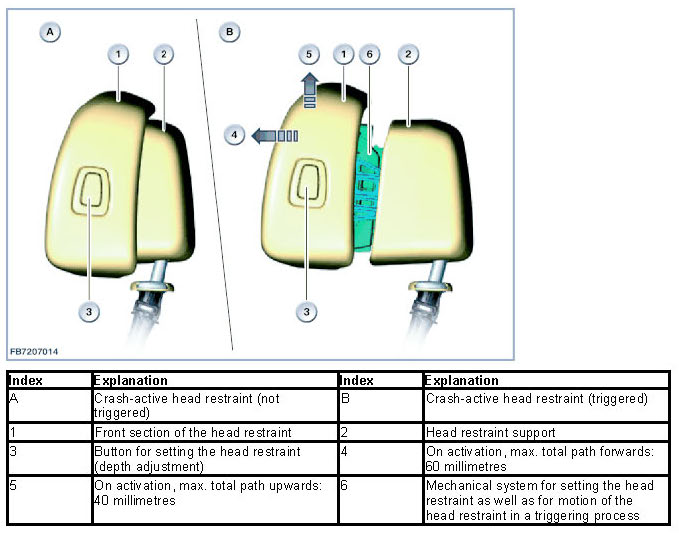
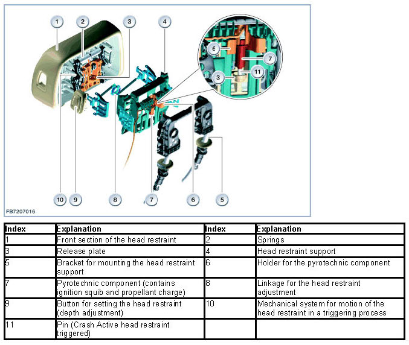
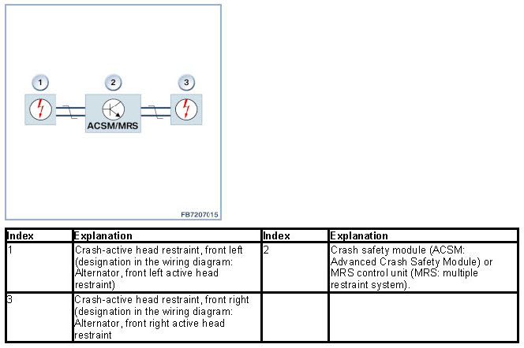

Crash-Active Head Restraint
Crash-Active Head Restraint
Crash-active head restraint
On activation, the crash-active head restraint reduces the distance between the head restraint and head in order to reduce the load on the cervical vertebrae during a rear-end collision. (Reason: The distance between the head and head restraint can increase as the result of the range of adjustment of the seat.)
Brief component description
The following components are described:
- Crash-active head restraint
- ACSM or MRS: Crash safety module or multiple restraint system (ACSM stands for "Advanced Crash Safety Module", referred to as the "crash safety module".)
- Airbag control lamp
Crash-active head restraint
The crash-active head restraint is available for the driver's and front passenger seat. From the outside the Crash-Active Head Restraint is distinguished by its two sections, which give it an easily recognized appearance. The Crash Active Head Restraint is available in two versions:
- Crash-active head restraint for the comfort seat
The depth adjustment of the head restraint can be set via the backrest upper section adjustment.
- Crash-active head restraint for all seats except comfort seat
The button for setting the head restraint (depth adjustment) is installed in the side face of the front section of the head restraint. It enables the position of the front section of the head restraint to be varied in 3 positions by up to 30 millimeters depending on what the occupant wants. For the forward depth adjustment, the front section of the head restraint only needs to be pulled (2 lock positions). For the backward depth adjustment, press the button in the front section of the head restraint. This releases the latch mechanism. The front section of the head restraint can be pressed backwards.
Spring force instantaneously propels the head restraint's front section into place in response to rear impacts. It moves forward by up to 60 millimeters, and upward up to 40 millimeters (depending upon the momentary height adjustment). This reduces the distance to the head.

When the Crash Active head restraint module or MRS control unit transmits a trigger signal, the Crash Active head restraint deploys as follows:
- The ignition squib in the pyrotechnic component ignites the propellant charge. The pyrotechnic component contains the ignition squib and propellant charge (designation in the wiring diagram:
"Alternator active head restraint front left" and "Alternator active head restraint front right").
- The propellant charge drives a pin. The pin presses onto a release plate.
- When the release plate shifts, the preloaded springs are triggered. The spring force moves the front section of the head restraint forward and upward.

NOTE: Deactivating the Crash Active head restraint with the passenger airbag deactivation feature
If SA470 "ISOFIX child-restraint mountings" or SA5DA "front passenger airbag deactivation" is installed it will be possible to deactivate the airbags and the Crash Active head restraints on the passenger side. The switch setting is selected using the integral code in the remote-control unit or the ID transmitter.
In the switch position "OFF", the following airbags on the passenger's side are not inflated:
- Front passenger airbag
- Side airbag
- Crash-active head restraint
- Knee airbag (if present)
The indicator lamp for front-passenger airbag deactivation lights up.
ACSM or MRS: Crash safety module / multiple restraint system
The crash safety module or multiple restraint system has the following tasks:
- Detecting an accident situation that is critical for the occupants
- Activating the necessary restraint systems (selectively depending on the severity of the accident and accident type)
All gas generators, pyrotechnic components and sensors are connected directly to the crash safety module or MRS control unit. The crash safety module or MRS control unit evaluates the data of the sensors. In the case of a crash, the crash safety module or MRS control unit decides whether it is necessary to trigger the seat belt tensioner and airbags and what airbags need to be deployed. The crash safety module or MRS control unit also triggers the Crash Active head restraints.

Airbag control lamp
The airbag indicator light indicates the operability of the crash safety system. The airbag indicator light in the instrument panel is activated by the crash safety module or MRS control unit via the K-CAN.
System functions
The following safety system functions are described:
- Self-test
- Impact detection
- Activating the safety system
- Data storage on activation of the safety system
Self-test
In addition to all the inputs and outputs, the crash safety module or MRS control unit also monitors the internal components (self-test). Possible faults are stored in the crash safety module or MRS control unit. In the event of a system error or a fault in a component, the airbag warning lamp lights up.
After switching on the ignition, the crash safety module or MRS control unit starts a self-test. During this time, the airbag warning lamp lights up (approx. 3 to 5 seconds). When the safety system is functional, the airbag warning lamp goes out.
- If no CAN message from the Crash Safety Module or MRS control unit is received at the instrument cluster the airbag indicator lamp lights up.
- The airbag indicator light remains on if the crash safety module or MRS control unit detects an existing fault or one that has been stored during the self-test or while the vehicle is in motion.
- If a fault is detected in the safety system, the operability of the safety system is partially maintained under the following conditions:
- If a fault is detected in a circuit of the safety system, only the function of the circuit concerned is disabled. The remaining airbags, belt tensioners and Crash Active head restraints remain operational.
- In the event of a fault in the circuit of the airbag warning lamp, the lamp does not light up in the self-test. With the precondition that no other fault is present, the safety system remains functional without restriction.
- The entire safety system is deactivated if there is an internal fault in the crash safety module or MRS control unit or in the voltage supply. (airbag warning and seat belt warning light light up, Check Control symbol in the liquid crystal display)
Impact detection
The direction and severity of an impact is detected by the acceleration sensors in the crash safety module or MRS control unit and by external acceleration sensors. The crash safety module or MRS control unit process all the acceleration data.
Activating the safety system
Comprehensive tests are used to define triggering thresholds for all possible types of accident. This results different trigger thresholds for activation of the various restraint systems (such as airbags, belt tensioners, Active head restraints).
The restraint systems are triggered only when 2 independent sensors detect the corresponding threshold. For example, a rear-end collision is detected by the longitudinal acceleration sensor in the airbag sensor in the driver's side B-pillar and by the longitudinal acceleration sensor in the crash safety module or MRS control unit. The crash safety module or MRS control unit calculates the direction of the impact and the accident severity from the data sent by the sensors. Depending upon the severity of the accident, the Crash Active head restraints and/or the safety battery terminal may be triggered, and the electric fuel pump may be deactivated.
Data storage on activation of the safety system
When the restraint systems trigger, certain data are written to a read only memory in the crash safety module or MRS control unit. The data is relevant to accident research (no access for service).
Notes for Service department
General note
Once the Crash Active head restraint has deployed the pyrotechnical component must always be replaced (observe repair instructions; designation of pyrotechnical component in Electronic Parts Catalogue: gas cartridge).
Only after replacement of the pyrotechnic component can the springs in the head restraint be tensioned again. This means: It will no longer be possible to lock the head restraint's front section in place after the Crash Active head restraint has been triggered. The front section of the head restraint is always pressed forwards by the spring force.
After replacing the pyrotechnic component, delete the fault memory.
Not responsible for printing errors, mistakes and technical changes.